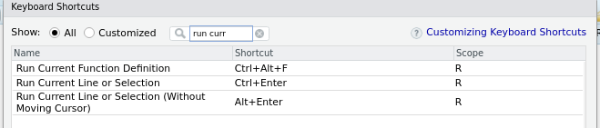
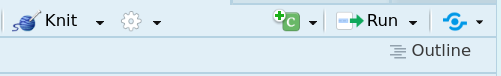

Coding Basics
Fundamentally, throughout your courses and research in ecology and evolutionary biology, you will be using R to ask your computer to help you understand your data. This might be doing simple calculations, such as finding means and medians of organismal size, or it might be more sophisticated, such as looking for significant differences in growth rates or building models to predict biological responses. In order for R to be useful to us in this sense, we have to know how to ask our computer to do these things. It is easiest to think of R as simply a interface between us and our computers. However, we must remember that computers are not intelligent, they will only do EXACTLY what we tell them to do. Therefore, we need to be specific about how we ask our computer to do things in service of answering our biological questions. This section covers some important concepts that will govern how we ask R to do things for us.
Running Code
In the Console
We can run code (i.e. ask R to perform a computation) a number of ways. First, if we use the console, we can simply type in our code, let's say we write 2 + 2 and simply press Enter/Return on our keyboards.
In a Script
If we are writing code in a .R file, we have a few more options. We could highlight the line we want to run, and use the "Run" button in the upper right hand corner of the scripts panel
Alternatively, the most common way of doing it, is to put your cursor on the cunk of code you want to run, or highlight the chunk, and then use a keyboard shortcut to run the code. On Mac computers, its usually Cmd+Return, and on Windows computers, its usually Ctrl+Enter. We can check what our shortcut is and/or change that shortcut to what we want, by going to the Keyboard Shortcuts menu:
And then searching for the shortcut that does Run Current Line or Selection:

We can see that on my computer currently it's Ctrl+Enter.
In an RMarkdown
In an RMardown document we have a few more options. To run code, first of all we have to open a code chunk, which can be done with the green "C" chunk button:

Or with a keyboard shortcut. On windows this shortcut is Ctrl+Alt+I and on Mac it is Cmd+Option+I by default. Once we have the chunk of code, we have a number of ways we can run the code. First, we can just use our Ctrl+Enter method of before, or we can use the handy run button that RStudio provides for us:
Which is the little green carrot on the right side.
Now that we know how to execute code, or essentially ask R to do things for us, we can continue our pathway of learning how to make R help us with our research!
R as a Calculator
At the most basic level, we can use R as a (very complicated) calculator. We can perform all the most basic operations that we might be interested in.
The classic operations (addition, subtraction, multiplication, division) work much as you might expect
2 + 2
## [1] 4
3 - 2
## [1] 1
3 * 2 # multiplication is denoted by an asterisk
## [1] 6
6 / 2
## [1] 3
2 ^ 3 # exponentiation is denoted by this carrot
## [1] 8
You can also ask R to help with more complicated operations such as:
Modulo Operations
The modulo operation returns the remainder of a division, after one number is divided by another Getting the remainder of division:
5 %% 2
## [1] 1
Integer Division
Only returns the integer value and not the decimal places:
5 %/% 2
## [1] 2
Boolean Operations
We can ask R to make comparisons between values and give us a boolean (true or false) response for a wide variety of operations.
We can ask R if two values are equal ==, inequal !=, greater than >, less than <, greater than or equal to >=, or less than or equal to <= . Some examples:
2 == 2
## [1] TRUE
2 != 3
## [1] TRUE
2 > 4
## [1] FALSE
Of note here is the difference between == and =. In R, == never performs any type of assignment, it only works to ask "are these two things equal to each other?", whereas the = will assign a value to a variable.
Assignment
You'll notice that up to now, we have simply been using numbers, but we can also use variables in R to store the values of numbers. If we wanted a variable x with value 2, we could assign this value in R using the assignment operator, <-. Once a variable is assigned, that variable will be stored in the environment, and can be called at any later point in the session.
x <- 2 x
## [1] 2
Two important notes with assignment:
1) In R, assignment can be done either through <- or =. Both will work identically, but the <- assignment operator is the more commonly used one and is technically best practice. Ideally, we should use <- to assign things (like objects and functions, which we'll cover later) to variables, and then we can use = to pass arguments in expressions
2) If you make an assignment of a value to a variable, that assignment is not permanent. You can overwrite that assignment simply by using the same variable name
Built-in Functions
Most of your initial use of R will be employing built-in functions that R has available for you to employ. For example, we might want to know the sum of a set of numbers.
sum(1, 6, 8)
## [1] 15
Functions are discussed in more depth later, but generally, the way they work in R is by calling the word for the function (i.e. sum()) followed by a set of parentheses, that take the functions arguments. Arguments are simply a few items that the function needs to provide the right answer to the question.
One can always find what arguments are needed in the function by running `?` and then the function in question. For example,
?sum
This will not return anything to the console, but in the bottom right panel of RStudio, the help window will open, with the documentation> on the function. For the ?sum example, the output is:
TIP: When in doubt about how to use a function, or really anything in R, check the documentation!
Naming
A lot of R is assigning values to variables, and each of those variables will need a name. Many programming languages have "style guides" that are a generally agreed-upon set of standards by the community of users that dictate how best to do common tasks in that language.
There are a handful of suggested style guides in R, but the most common and the one followed in this resource is Hadley Wickham's style guide , which is based on that of Google's R style guide.
With respect to naming:
Variable and function names should be lowercase. Use an underscore (_) to separate words within a name. Generally, variable names should be nouns and function names should be verbs. Strive for names that are concise and meaningful (this is not easy!).
Objects & OOP
To understand what’s going on in R, it’s important to understand how the things (termed "Objects") are being stored in R. Everything (yes, literally everything) is an object. Objects are the basis of what we call object-oriented programming. An object is a data structure having some attributes and a set of methods that act on those attributes.
Object-oriented programming languages (sometimes called ‘high-level’ lanaguages) are typically more intuitive and are often used via an IDE (integrated development environment) like RStudio or a GUI (graphical user interface).
The EEB R Manual is the work of researchers at the University of the Toronto
and intended as a purely educational resource. It holds no official
association with the R Foundation. It should not be taken as an
authority on R best practices.
When using this resource,
This content is reviewed regularly for errors and to make improvements, if you see an error and want to help us make this better, see the Contact Page